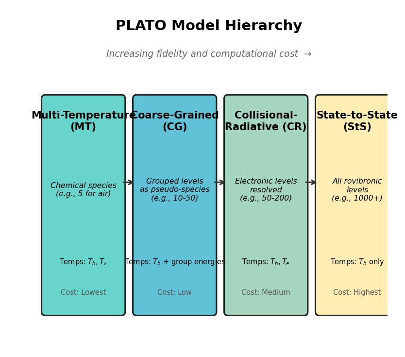

4. Nonequilibrium Models
This chapter describes the hierarchy of physicochemical models available in PLATO: multi-temperature (MT), coarse-grained (CG), collisional-radiative (CR), and state-to-state (StS). The presentation follows [Munafo_thesis] (Chapter 3), which develops all four models within a unified framework for the N2–N system. All models share the same governing equation structure; they differ in the species set, the number of temperatures, and the granularity of internal energy resolution.
{kind=link}

Figure 4.1 The four PLATO model levels with increasing fidelity and computational cost. All share the same governing equation structure and transport formulation; they differ in the species set and temperature description.
4.1. Model Hierarchy
Model |
Acronym |
Species Set |
Temperatures |
|---|---|---|---|
Multi-temperature |
MT |
Chemical species (e.g., N2, O2, NO, N, O) |
\(T_h, T_v\) (Park 2T) or \(T_h, T_v, T_e\) (3T) |
Coarse-grained |
CG |
Grouped internal levels as pseudo-species |
\(T_h\) (+ group energies) |
Collisional-radiative |
CR |
Resolved electronic levels |
\(T_h, T_e\) (+ level populations) |
State-to-state |
StS |
Fully resolved rovibronic levels |
\(T_h\) (+ level populations) |
4.2. Multi-Temperature (Park 2T) Model
The standard two-temperature model [Park1989] is the simplest nonequilibrium description. It introduces two temperatures:
\(T_h\) — heavy-particle translational-rotational temperature
\(T_v\) — vibrational-electronic temperature (often set equal to \(T_e\))
Governing equations (in addition to species continuity for each chemical species):
where the energy exchange terms \(\Omega\) are defined in Energy Exchange Terms.
Dissociation rates use the Park activation temperature ((3.2)):
This geometric average blends translational and vibrational influence on the dissociation threshold crossing.
4.3. Coarse-Grained (CG) Model
The CG approach [Munafo_thesis] (Chapter 3) reduces the dimensionality of the StS model by grouping internal energy levels into a manageable number of bins (typically 5–50 groups per molecule).
Each group (or “energy bin”) \(k\) is treated as a pseudo-species with:
Number density \(n_k = \sum_{i \in B_k} n_i\)
Group reference energy \(\tilde{E}_k\)
Group partition function \(\tilde{Q}_k(T)\)
Group partition function [Munafo_thesis] (Eq. 3.83):
where \(B_k\) is the set of rovibrational levels in group k.
Coarse-grained rate coefficients are obtained by Boltzmann-averaging the StS rates over each group [Munafo_thesis] (Eqs. 3.58–3.59):
Microreversibility is enforced at the group level [Munafo_thesis] (Eq. 3.92):
These pre-averaged rates are stored as binary lookup tables in
database/kinetics/{ng}g/ and interpolated at runtime using bicubic
interpolation.
Note
CG kinetics use a numerical Jacobian (finite differences) rather than analytical derivatives, because the tabulated rates do not provide closed-form derivatives.
Source: src/kinetics/kinetics_group.F90.
4.4. State-to-State (StS) Model
The full StS model treats each internal energy level as an independent species. For a diatomic molecule with \(N_v\) vibrational and \(N_J\) rotational levels, this can mean thousands of pseudo-species.
Species conservation for level \(i\):
where \(\dot{\omega}_i\) includes all state-specific inelastic and reactive processes.
Thermodynamic properties of StS pseudo-species:
MODEL =
NONEorSTSin the database\(Q_i = g_i\) (degeneracy only, no Boltzmann sum)
\(e_i^{\mathrm{int}} = 0\) (internal energy is zero above the level’s own reference)
Formation energy \(e_{f,i}\) encodes the level energy
This is the key insight: in the StS model, the internal energy distribution is not assumed to follow any analytical distribution (Boltzmann, Treanor, etc.) — it emerges from the solution of the coupled kinetic equations.
No separate vibrational temperature is needed because the distribution is resolved explicitly. The only temperature is \(T_h\) for translational motion.
4.5. Collisional-Radiative (CR) Model
The CR model resolves electronic energy levels while grouping rovibrational levels within each electronic state. It sits between MT and StS in complexity.
Key features:
Electronic levels of atoms are resolved individually
Rovibrational states within each electronic manifold use Boltzmann distributions at local temperatures
Radiative transitions (bound-bound, bound-free) compete with collisional processes
The CR model typically requires \(T_h\) and \(T_e\), with electronic populations solved as part of the species system.
4.6. Polymorphic Dispatch Mechanism
PLATO uses procedure pointer arrays to switch between models at runtime,
avoiding explicit if/else branching in inner loops. The dispatch is
configured in src/thermo/thermo_pointer.F90 during initialization.
The key arrays are:
! Procedure pointer arrays (one entry per species)
procedure(Q_interface), pointer :: comp_Q(:) => null()
procedure(e_interface), pointer :: comp_e(:) => null()
procedure(s_interface), pointer :: comp_s(:) => null()
procedure(g_interface), pointer :: comp_g(:) => null()
procedure(cv_interface), pointer :: comp_cv(:) => null()
Each species’ MODEL flag determines which concrete function is assigned:
RR_HO_EL\(\to\)rr_ho_el_Q,rr_ho_el_e, etc.EL\(\to\)el_Q,el_e, etc.NONE/STS\(\to\)constant_Q,no_e, etc.GROUP\(\to\)group_Q,group_e, etc.
This means the same top-level compute_rate_coeff() and get_source()
routines work for all model types. The runtime selection happens at
initialization, not in the inner loop.
4.6.1. Runtime Model Selection
The model is determined entirely by the database files:
Mixture file (
database/mixture/) — lists the species (chemical or pseudo-species)Species data files (
database/thermo/) — contain the MODEL flag per speciesTransfer file (
database/transfer/) — specifies number of temperatures
No explicit code branching for MT vs. StS is needed. Which nb_* counters
are nonzero (e.g., nb_vib_modes > 0) determines which reaction loops
execute.
Warning
A known issue exists in the StS equilibrium composition solver: the Newton–Raphson system for LTE composition can become ill-conditioned when thousands of StS pseudo-species are present, because many levels have negligible populations. This is documented and under investigation.
4.7. Collisional-Radiative Coupling
The radiation module (src/radiation/) provides:
Bound-bound (BB): line emission and absorption with Voigt profiles
Bound-free (BF): photoionization with Kramers cross-sections
Free-free (FF): Bremsstrahlung
These radiative processes enter the kinetics as additional source terms (reaction types 12, 15, 16 in Reaction Process Types). The coupling is one-way in the current implementation: radiation affects populations but populations do not modify the radiation field (optically thin assumption for kinetics; the full radiation transport is handled by external solvers like MURP).
References